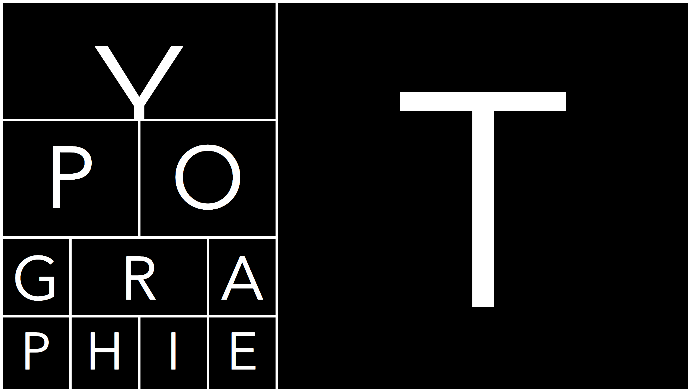

Webanimaties
 "Voor deze opdracht heb ik een poster moeten kiezen
die ik vervolgens digitaal heb moeten maken. Hiervoor heb ik HTML, CSS en Javascript
gebruikt. Ik heb ervoor gekozen binnen mijn html een grid te maken om de elementen goed
te kunnen positioneren.
Hierna heb ik de poster interactief gemaakt door een hover te
maken, waarbij bepaalde letters zich omdraaien en sommige vlakken verkleinen. Ook heb ik een keypress-funtie aangemaakt,
waarbij de vlakken van bepaalde letters (T, Y, P, O, G, R, A, P, H, I, E) draaide en heb ik een mouseclick-functie aangemaakt waarbij de achtergrondkleur
van de vlakken veranderen".